<div class="textcontainer">
<p class="margin"> </p>
<p><strong> <h3>Week 4: Microcontroller Programming</h3> </p>
<h4>360 Camera: Kinetic Sculpture + Microcontroller Programming</h4>
<br></br>
<video width="640" height="480" controls>
<source src="360vid_cut.mp4" type="video/mp4">
</video>
<p><strong> <h3> Materials required:</h3> </p>
<p> Wood (3.2mm thickness)</p>
<p> Ribbon (or any decorative material of choice) </p>
<p> Skewer </p>
<p> Reflective film paper </p>
<p> Ziptie (optional) </p>
<p><strong> <h3>Tools required: </h3> </p>
<p> Scissors </p>
<p> Super glue (adhesive) </p>
<p> Calipers </p>
<p> Laser cutter </p>
<p><strong> <h3> Electronic Components: </h3> </p>
<p> DC motor </p>
<p> L9110 motor driver </p>
<p> Microcontroller </p>
<p> Pin-to-socket Wires </p>
<h4><u> Sketching & Ideation</h4></u>
<p> Building on the carousel-inspired model, I began brainstorming ways of improving the physical design. I thought of doing a regular carousel, maybe something with musical chairs thing or even maypole dancing. However, in the process of assembly, I decided to forego all of those ideas and instead make a 360 spinning camera while keeping the same spinning gear mechanism. </p>
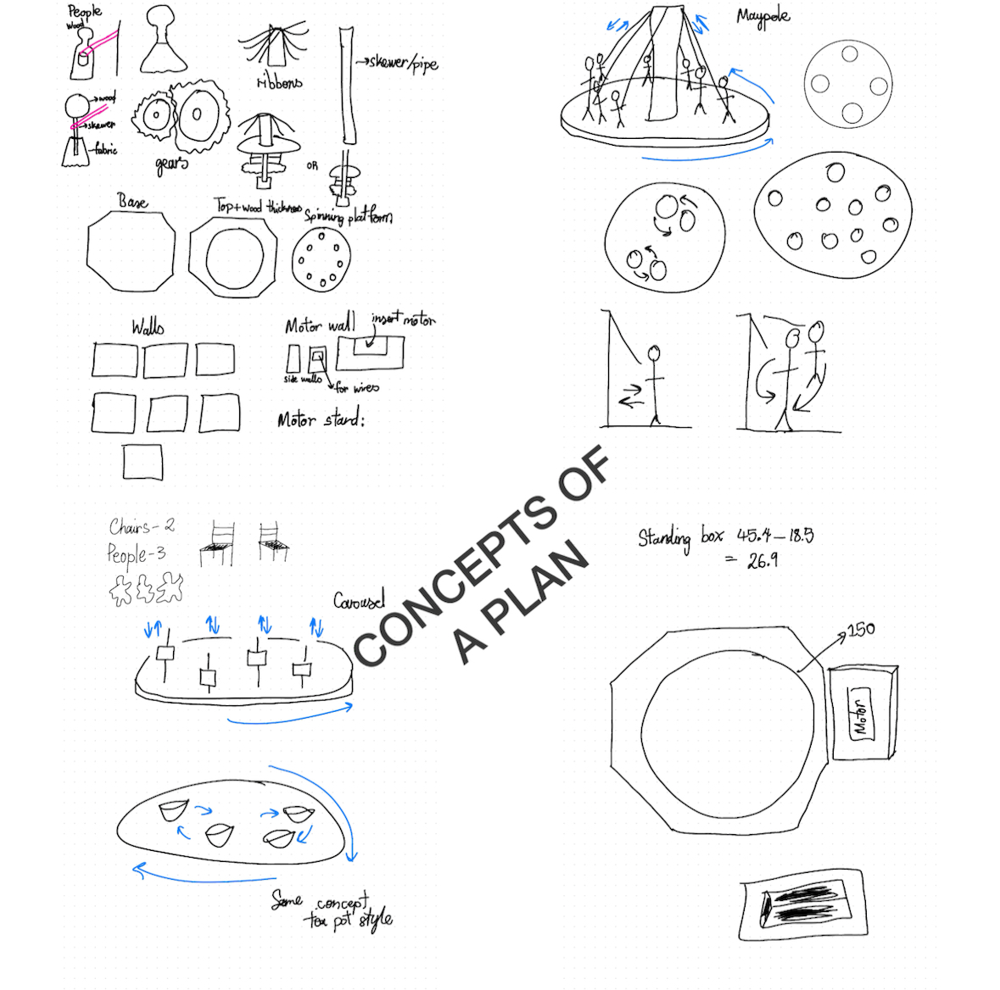
<h4><u> Making the Moving Parts</h4></u>
<p> I designed and modeled the moving components in Fusion 360 before fabricating them via laser cutting from 3.2 mm wood: </p>
<p><u> Circles + octagon for spinning base </p></u>
<p> The dimensions in Fusion360: </p>
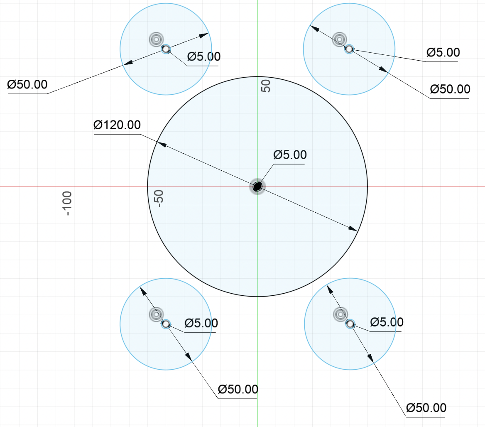
<img src="./octagonbase.png" alt="octagonal parts" style="width:300px">
<p> Laser cut parts: </p>
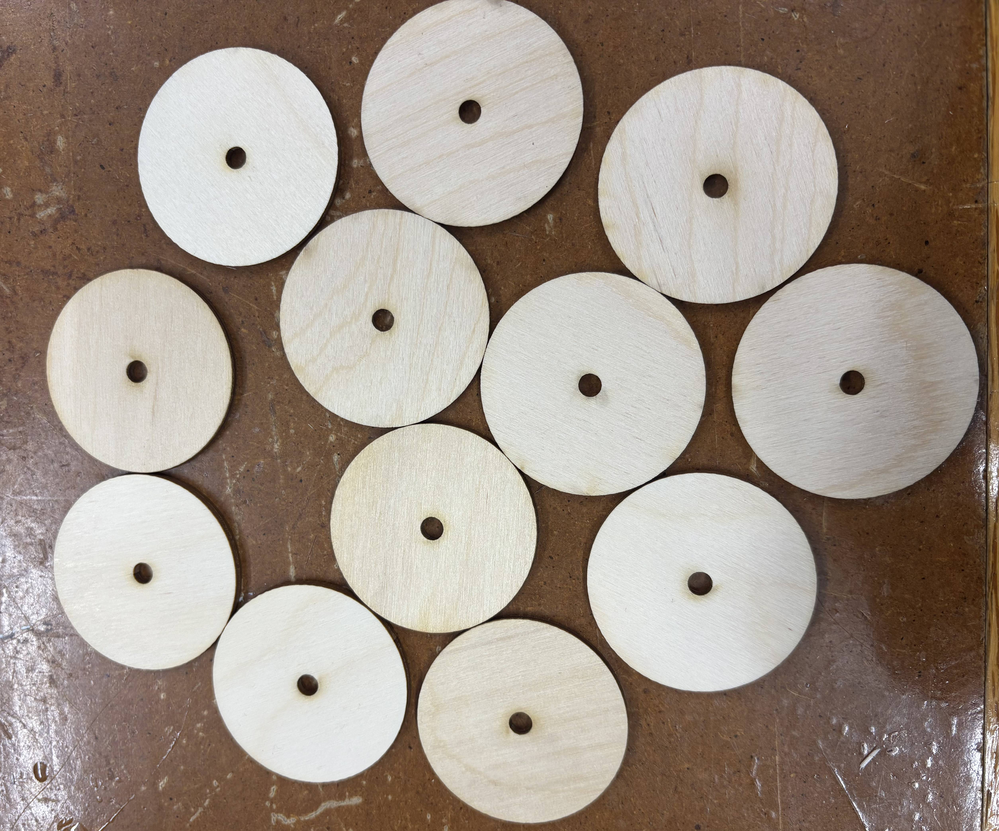
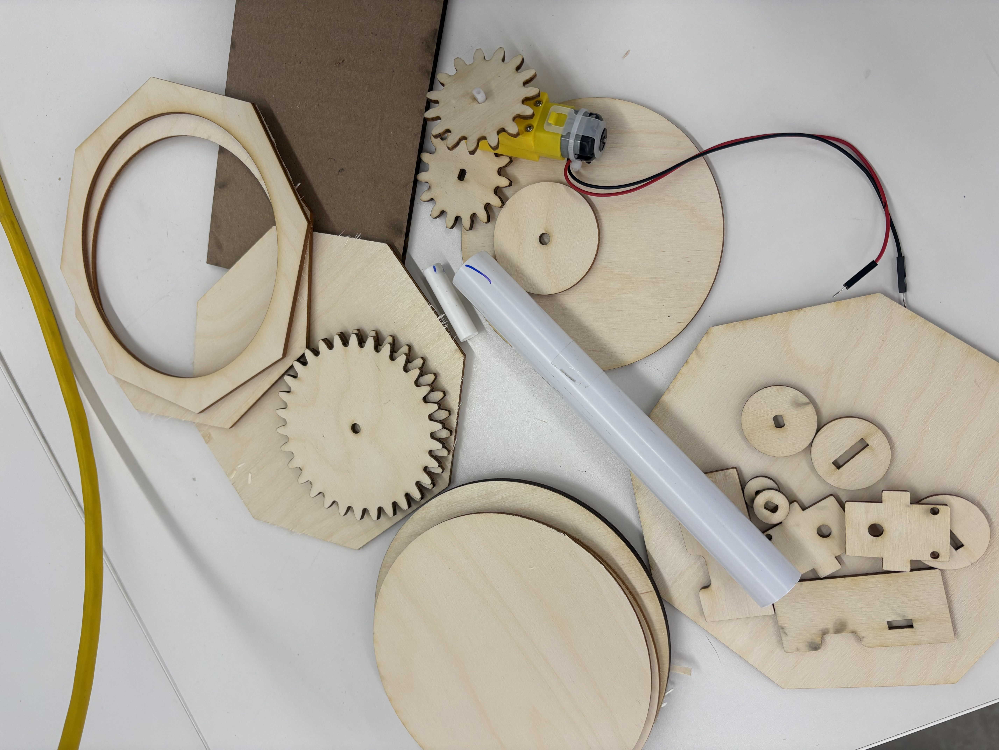
<p> I used 12 copies of the smaller circles, 1 copy of the large circle and one octagon in my final assembly. </p>
<p><u> Gears</p></u>
<p> I used a module of 3 for both gears with 30 teeth for the big gear and 15 teeh for the small gear. For the smaller gear I also made a hole that is the specific size and shape of the rotor on the motor. For the large gear, I added a 5mm circle to fit the skewer. </p>
<p> The dimensions in Fusion360: </p>
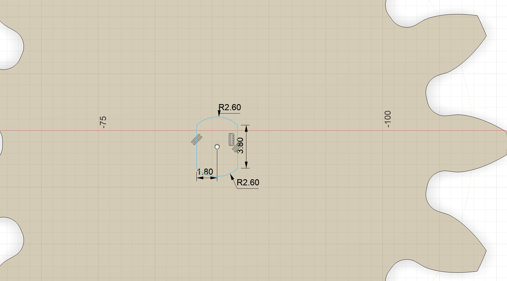
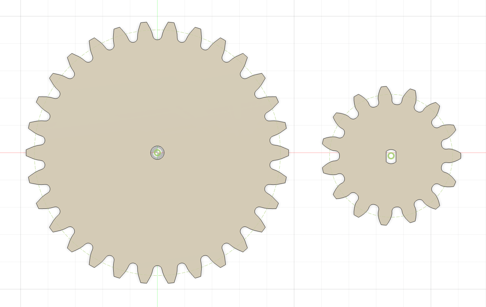
<p><u> Motor mount</p></u>
<p> The dimensions for these pieces were collected by measuring the dimensions on the DC motor. </p>
<p> The dimensions in Fusion360: </p>
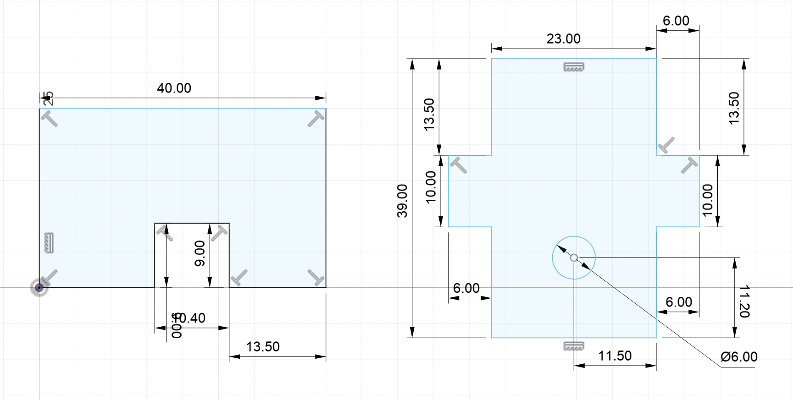
<p> Laser cut parts: </p>
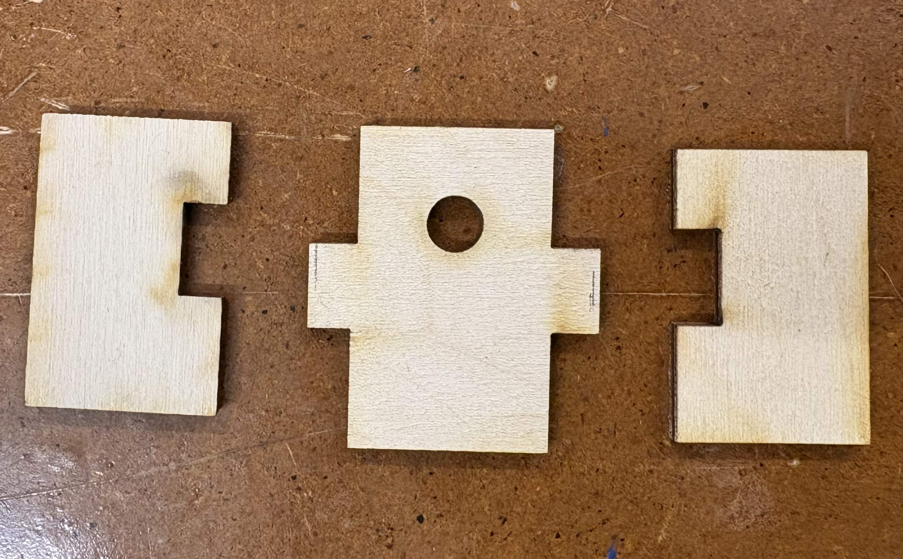
<p><u> Camera </p></u>
<p> Fusion360: </p>
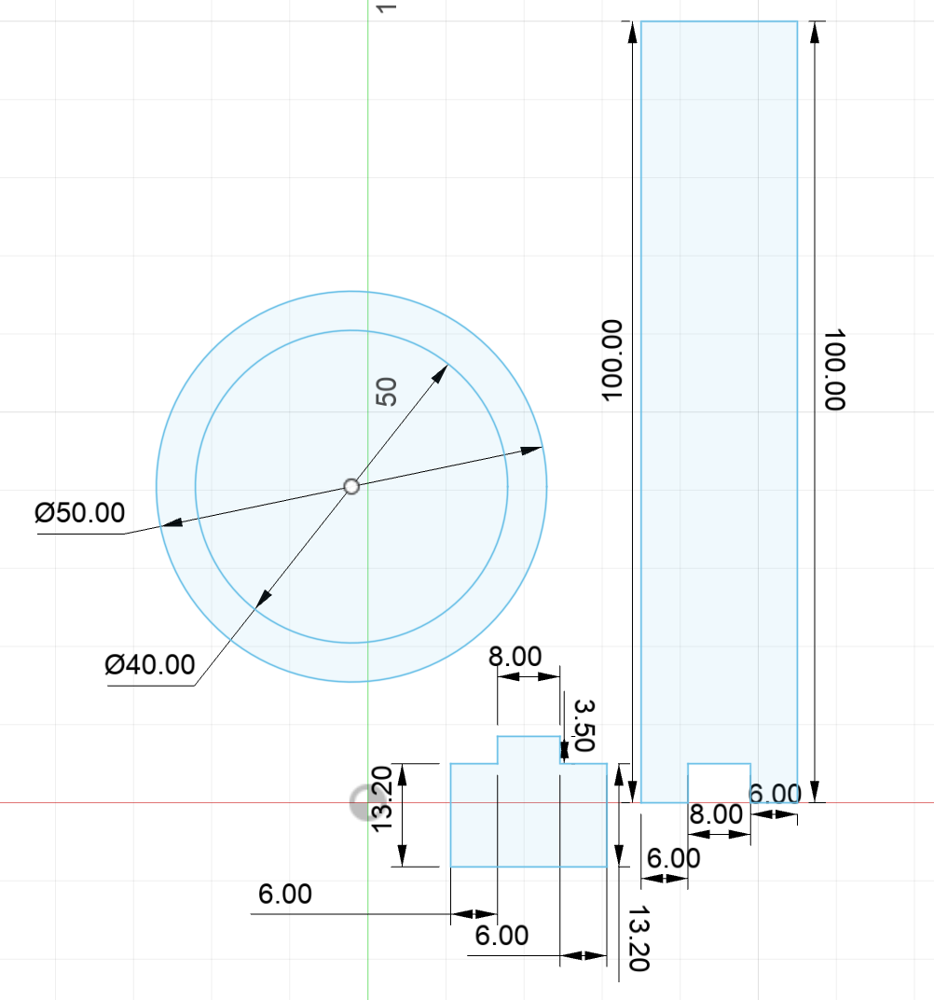
<h4><u> MCU Circuit</h4></u>
<p> Here is the code for the microcontoller: </p>
<pre class="pre prettyprint">
<code class="language-cpp code">
const int A1A = D0; // define pin D0 for A-1A (PWM Speed)
const int A1B = D1; // define pin D1 for A-1B (direction)
// setting PWM properties
const int freq = 5000;
const int resolution = 8;
void setup() {
pinMode(A1A, OUTPUT); // specify these pins as outputs
pinMode(A1B, OUTPUT);
ledcAttach(A1A, freq, resolution);
ledcWrite(A1A, 0); // start with the motors off
digitalWrite(A1B, LOW);
}
void loop() {
// start the motor at a low speed
ledcWrite(A1A, 200);
digitalWrite(A1B, LOW);
delay(3000); // allow the motor to run for 3 seconds
// reverse the motor direction at the same speed
digitalWrite(A1B, HIGH); // switch direction
ledcWrite(A1A, 50); // here the logic for speed is inverted
delay(4000); // allow the motor to run for 4 seconds
// stop the motor
ledcWrite(A1A, 0); // setting both pins LOW stops the motor
digitalWrite(A1B, LOW);
delay(1000); // keep the motor off for 1 second
// start the motor at a low speed
ledcWrite(A1A, 200);
digitalWrite(A1B, LOW);
delay(2000); // allow the motor to run for 2 seconds
// reverse the motor direction at the same speed
digitalWrite(A1B, HIGH); // switch direction
ledcWrite(A1A, 50); // here the logic for speed is inverted
delay(2000); // allow the motor to run for 2 seconds
// stop the motor
ledcWrite(A1A, 0); // setting both pins LOW stops the motor
digitalWrite(A1B, LOW);
delay(1000); // keep the motor off for 1 second
// start the motor at a low speed for a longer time period
ledcWrite(A1A, 200);
digitalWrite(A1B, LOW);
delay(5000); // allow the motor to run for 5 seconds
// stop the motor
ledcWrite(A1A, 0); // setting both pins LOW stops the motor
delay(1000); // keep the motor off for 1 second
// reverse the motor direction at the same speed for a longer time period
digitalWrite(A1B, HIGH); // switch direction
ledcWrite(A1A, 50); // here the logic for speed is inverted
delay(5000); // allow the motor to run for 10 seconds
// spin back and forth
// start the motor at a low speed
ledcWrite(A1A, 200);
digitalWrite(A1B, LOW);
delay(1000); // allow the motor to run for 2 seconds
// start the motor in opposite direction at the same speed
digitalWrite(A1B, HIGH); // switch direction
ledcWrite(A1A, 50); // here the logic for speed is inverted
delay(1000); // allow the motor to run for 2 seconds
// stop the motor (END)
ledcWrite(A1A, 0); // setting both pins LOW stops the motor
digitalWrite(A1B, LOW);
delay(5000); // keep the motor off for 5 seconds
}
</code>
</pre>
<p> Circuit Components: </p>
<p> This is the L9110 motor driver. I connected the motor leads to the screw terminals in the port for Motor B. </p>
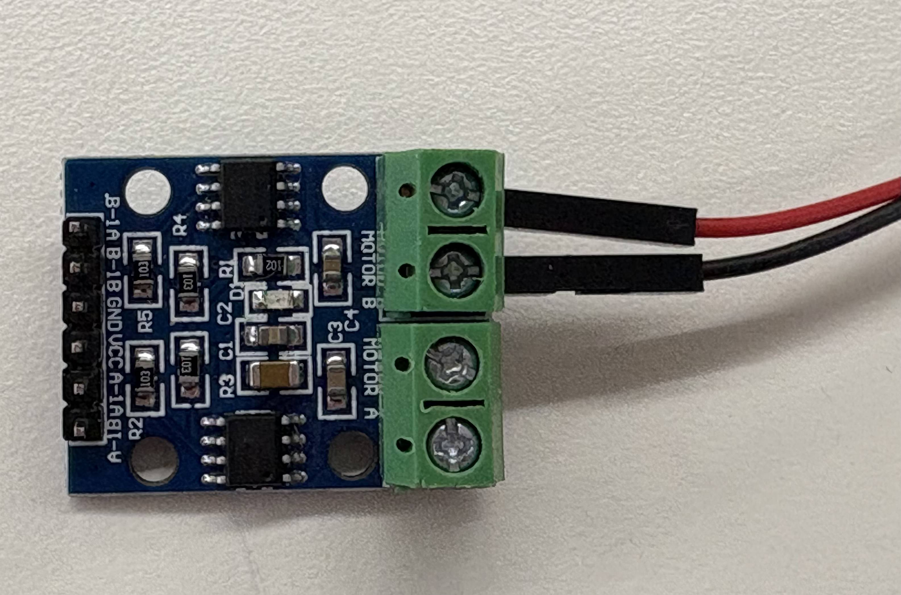
<p> Here is the lower side of the microcontroller. I used the pins VUSB, GND, D0 & D1. </p>
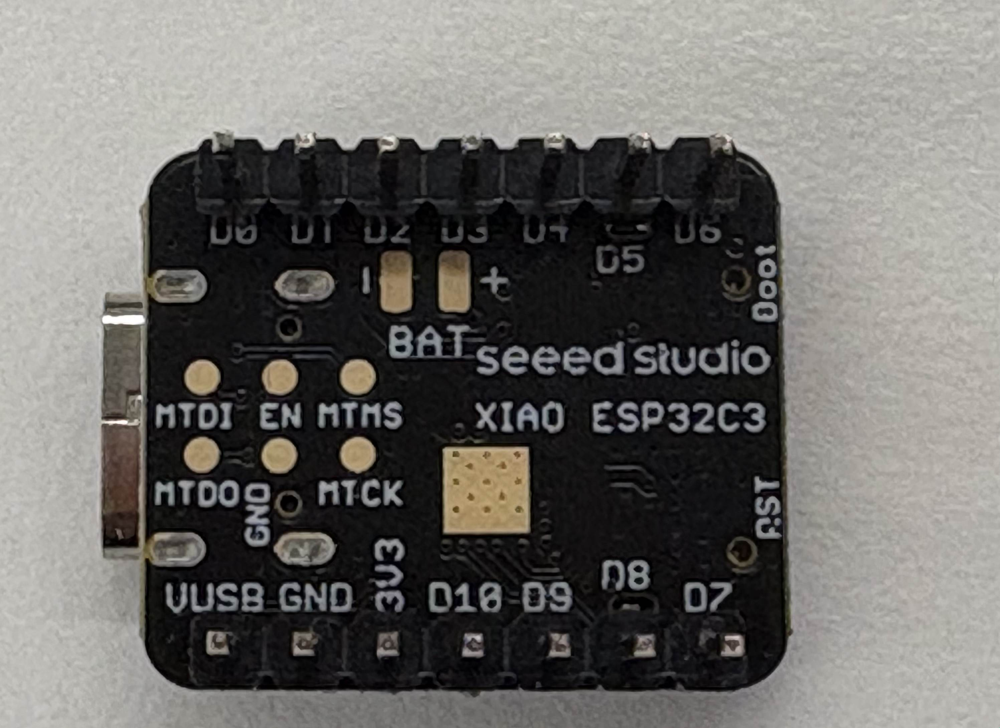
<p> I connected GND and VUSB from the sockets on the MCU to the GND and VCC pins on the L9110 (black and purple wires). I then connected the D0 and D1 pins from the MCU to the B-1A and B-1B pins on the L9110 (grey and white wires). </p>
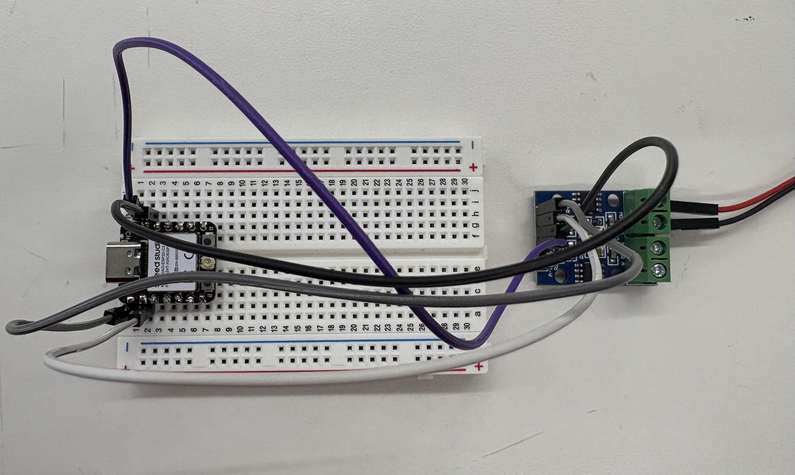
<p> Circuit: </p>
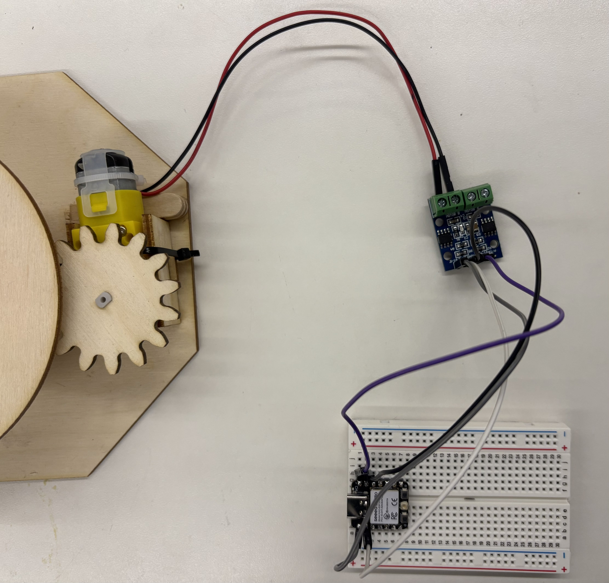
<h4><u> Assembly Time </h4></u>
<p> I first used superglue to get the parts of the motor mount together then put this on the base octagon. </p>
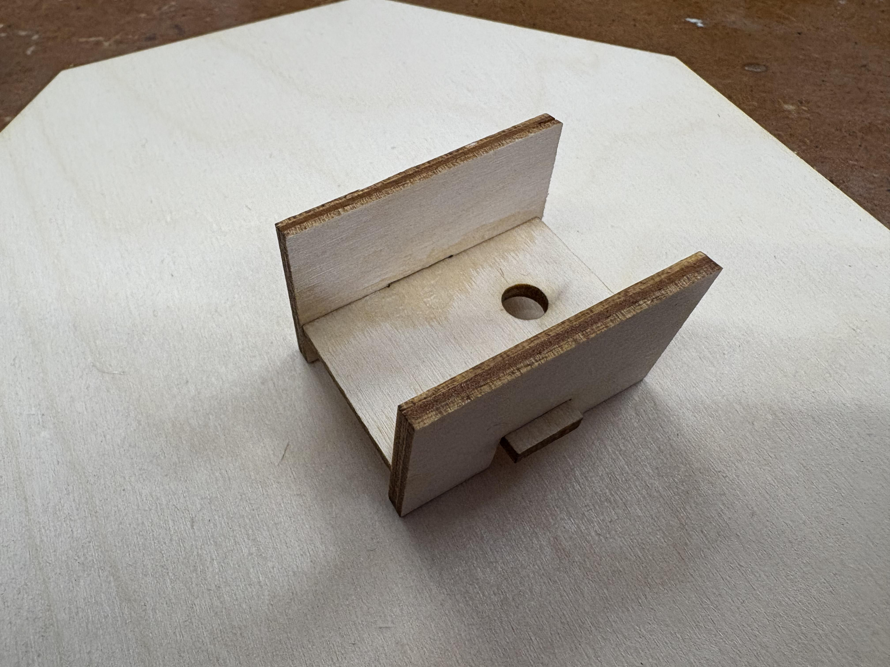
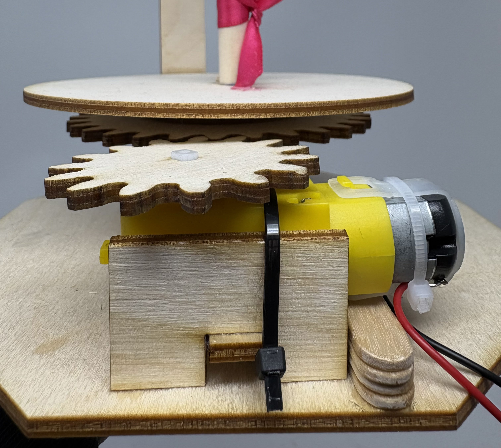
<p> I later added a stack of 4 popsicle sticks and held it together with a ziptie to help hold the gear in place and prevent it from moving. </p>
<p> I then stacked 10 of my small circles on top of each other, holding them together with the superglue. After which I put this stack of 10 circles on the skewer. </p>
<p> I then stacked the big gear, two small circles and then the big, base circle using super glue and added that to the skewer as well. (Ensure not to superglue this stack to the stack of 10 circles or base will not spin). </p>
<p> Next, I did a trial run of my gears turning to determine the best position to put the stack of circles. All the base parts come together to look like this! </p>
<br></br>
<video width="640" height="480" controls>
<source src="complete_base.mp4" type="video/mp4">
</video>
<p> To make the camera, I put the rings on reflective film paper, assembeld all the parts then mounted the structure onto the spinning platform, all attached with superglue. Lastly, I made my makeshift person with a wooden cylindrical block, decorating it with ribbons. Feel free to be creative and make the human being out of any material you see fit.</p>
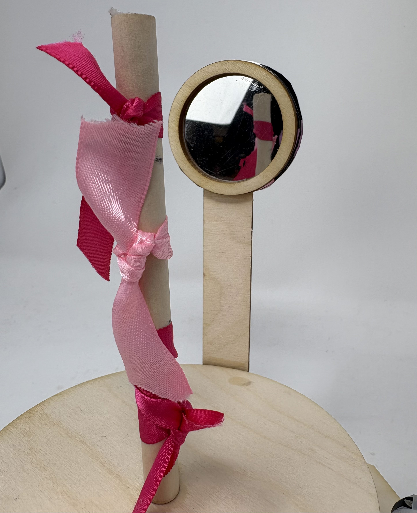
<p> Code, CHECK! Assembly, CHECK!. Here is the final sculpture! </p>
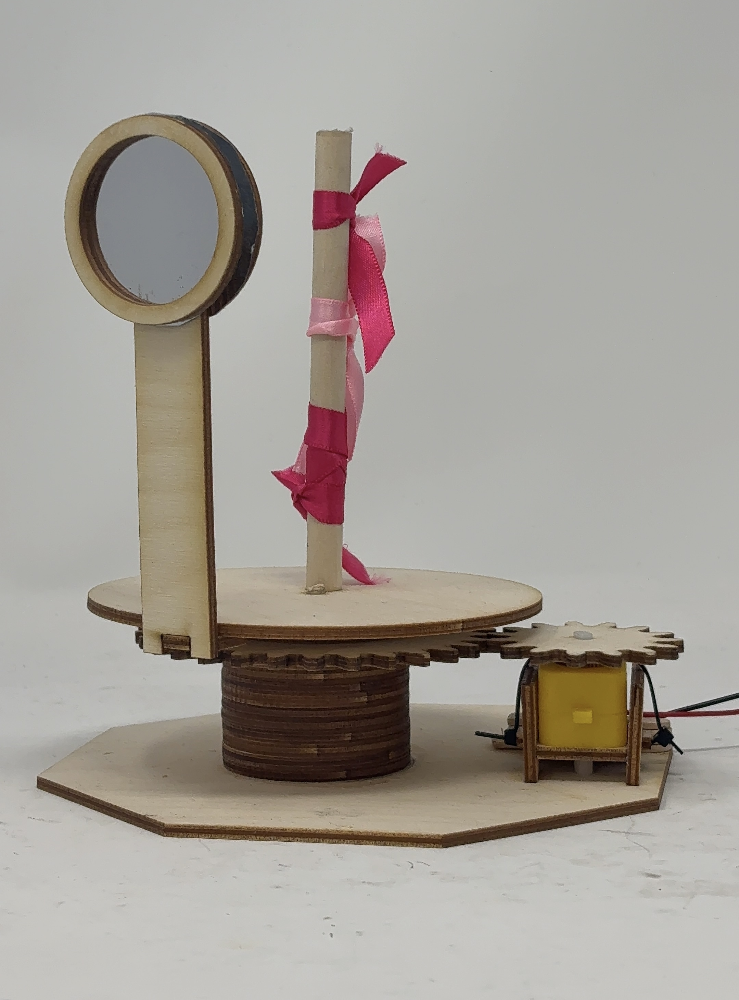
<p> Now, let's run everything together! </p>
<br></br>
<video width="640" height="480" controls>
<source src="360camera_full.mp4" type="video/mp4">
</video>
</div>